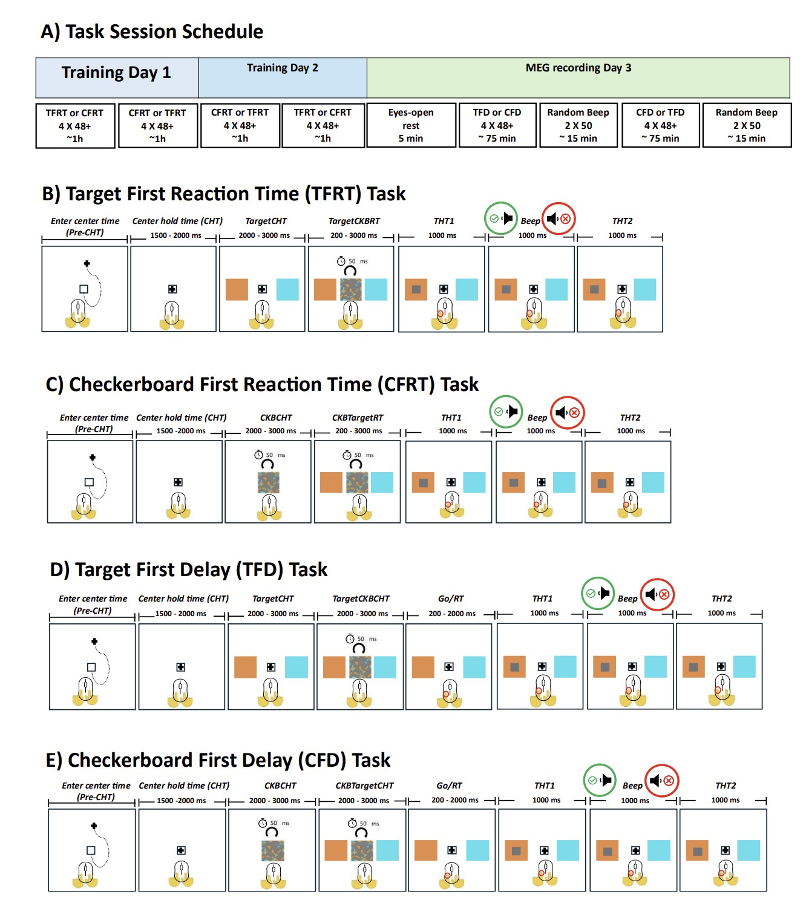

Niloofar Gharesi
Health AI Engineer | Machine Learning for Human Data
I build machine learning systems that transform complex, noisy human data into interpretable and real-world decisions.

Health AI Engineer | Machine Learning for Human Data
I build machine learning systems that transform complex, noisy human data into interpretable and real-world decisions.
To shape the future of healthcare through intelligent systems that understand human behavior and decision-making.
To build robust and interpretable machine learning pipelines for complex, real-world human data.
Builder mindset, scientific rigor, real-world impact, delivering interpretable systems with disciplined, accountable execution.

Understanding how the brain evaluates decision outcomes under uncertainty, and whether reward prediction error–like signals emerge in deterministic settings.
Identified beta-band signals reflecting context-dependent outcome evaluation, showing RPE-like dynamics strongest when correct outcomes were least expected.

Investigated neural signals underlying outcome expectation and evaluation using MEG and decision-making tasks.
Developed evaluation frameworks for LLM-based therapy simulations and behavioral analysis pipelines.
Built machine learning pipelines for MEG data and studied neural mechanisms of decision-making under uncertainty.
Email: your.email@example.com
LinkedIn: linkedin.com/in/niloofargharesi